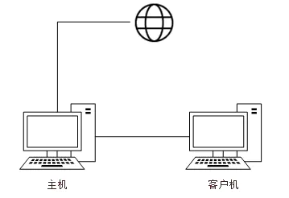
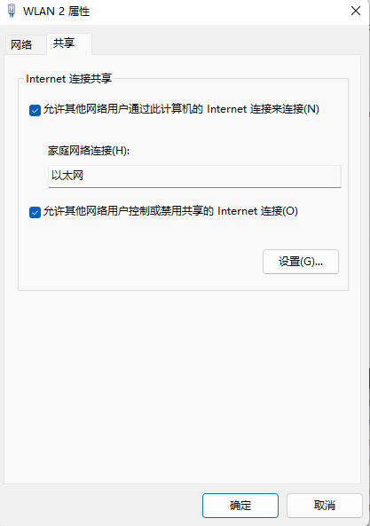
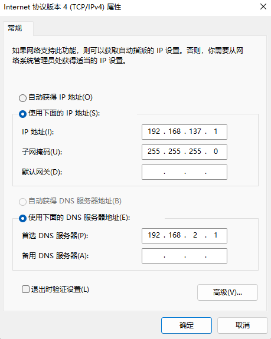
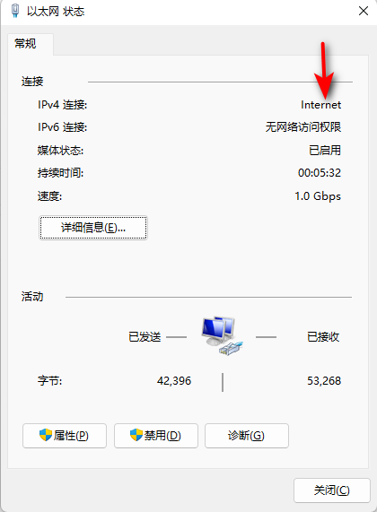

Network | 一根网线共享网络
前言
参考链接：
目的：将树莓派通过 Wifi 连接到家庭网络，但是在使用命令 sudo apt update 的时候，发现无法连接到服务器。经过查询，觉得可能是因为家里使用的是 PPPoE 网络，路由器的 MTU 与系统的默认 MTU 不一致。经过长时间折腾也解决不了，因此打算通过一条网线将树莓派与 PC 进行连接，实现网络的共享，尝试是否可以成功连接服务器。
过程
PC 通过 Wifi 连接网络，树莓派通过网线与 PC 连接，形成局域网，共享网络。网络架构图如下所示

-
在 PC 上进行如下操作：
-
打开控制面板——> 网络和共享中心——> 更改适配器设置
-
选择无线网卡——> 属性——> 点击共享标签——>开放共享网络权限，将网络通过以太网共享
 -
选择以太网网卡——>属性——>双击 Internet 协议版本4 (TCP/IPv4)，修改配置如下
IP 地址等使用系统默认设置即可，首选DNS服务器选择 WLAN 中的 DNS 服务器 IP 地址，否则无法打开网页。
-
-
在树莓派上进行 IP 设置
-
修改文件
/etc/netplan/50-cloud-init.yaml，对以太网 IP，DNS服务器和默认网关进行设置1
2
3
4
5
6
7
8
9
10
11
12network:
ethernets:
eth0:
dhcp4: false # 取消DHCP动态分配
optional: true
addresses: [192.168.137.3/24] # IP地址，应该与PC的IP处于同一网段
routes:
- to: default
via: 192.168.137.1 # 默认网关，即主机的IP地址
nameservers:
addresses: [192.168.137.1,8.8.8.8] # 首选DNS为主机的IP地址
version: 2 -
更新配置：
$ sudo netplan apply
-
-
使用网线将 PC 与树莓派连接，分别 ping 对方，查看是否能够 ping 的通。如果能够互相 ping 通，那么局域网便构建成功了。两者便可以共享网络了。
发现PC可以 ping 通树莓派，但是树莓派却 ping 不通 PC。那么大概率是防火墙导致，关闭PC的防火墙，便可以成功 ping 通了。
如果发现无法成功共享网络，那么在 PC 端重启下以太网网卡即可。
使用该方法，虽然最终还是没解决问题，但是学到了一个没啥用的技术，哈哈哈哈